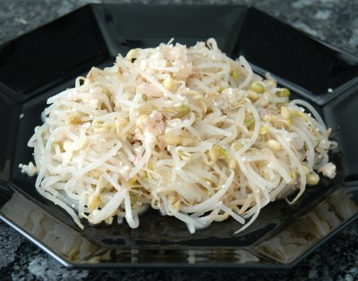

| Zutaten für 4 Personen: | |
| 1 Dose | Bambussprossen in Stücken |
| 1 El | Klebreis (Milchreis) |
| 1 | Zwiebel (gross) |
| 1 | Knoblauchzehe |
| 1 El | Öl |
| Zitronensaft | |
| Nampla | |
Bambussprossen in feine Streifchen schneiden, in kochendem Salzwasser 5 Minuten blanchieren, in ein Sieb geben und abtropfen lassen. Reis in einer Bratpfanne ohne Öl auf mittlerer Hitze unter ständigem Rühren goldbraun rösten, dann in einem Mörser zu "Sand" zerreiben.
Zwiebel und Knoblauch hacken und in einem Mörser zu einem Brei zerstossen; in der Bratpfanne mit Öl goldbraun rösten. Bambussprossen in eine Schüssel geben, Zwiebelbrei und zerstossenen Reis beifügen, mit Zitronensaft und einem kleinen Spritzer Namplasauce abschmecken.
Schmeckt eigentlich ganz OK wenn man sich mal den Aufwand mit dem Reismehl leistet. RE, 19.4.2009
@LINKBACK_TAG@ @WAKELOCK@